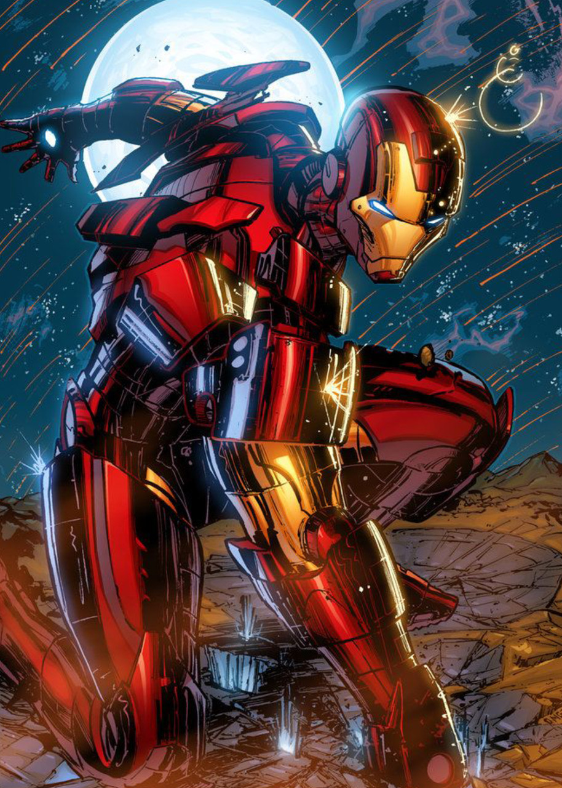

My short resume
Rustam, Nigmatulin
My goal is to become a programmer (Frontend JS developer). The quality of education and the possibility of self-realization are important to me. I am a student of RANEPA, 4 courses. I had an internship at EPAM Systems as a frontend developer; the internship was 2 weeks. I spend a lot of time self-learning and learning new technologies in the world of front-end and programming in general.
Skills (e.g. programming languages, frameworks, methodologies, version control, tools etc.)
- Learning Technologies: JavaScript (es5, es6), html5, css3, vue.js, smartgrid, windows user, git, webpack, gulp, sccs;
- IDE: VSCode, SublimeText, Web Storm.
-
Code examples (LATEST)
Summer internship at EPAM Systems (frontend)
Education (including courses, seminars, lectures, online learning)
- Secondary education - a technician for setting up and repairing PCs and computer equipment
- Bachelor: RANEPA, Department of Economics and Management, direction Management
- Additional educational program - Fundamentals of doing business and creating small and medium enterprises
Studying English at the institute and independent work, participating in a conference with publication (2018)
